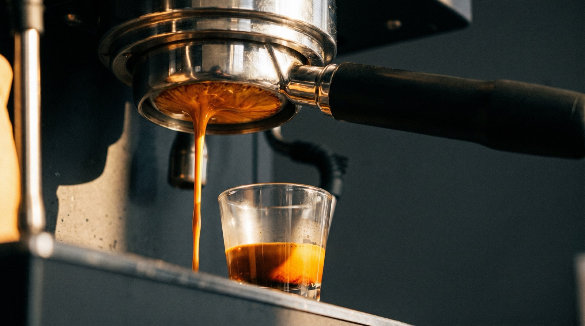
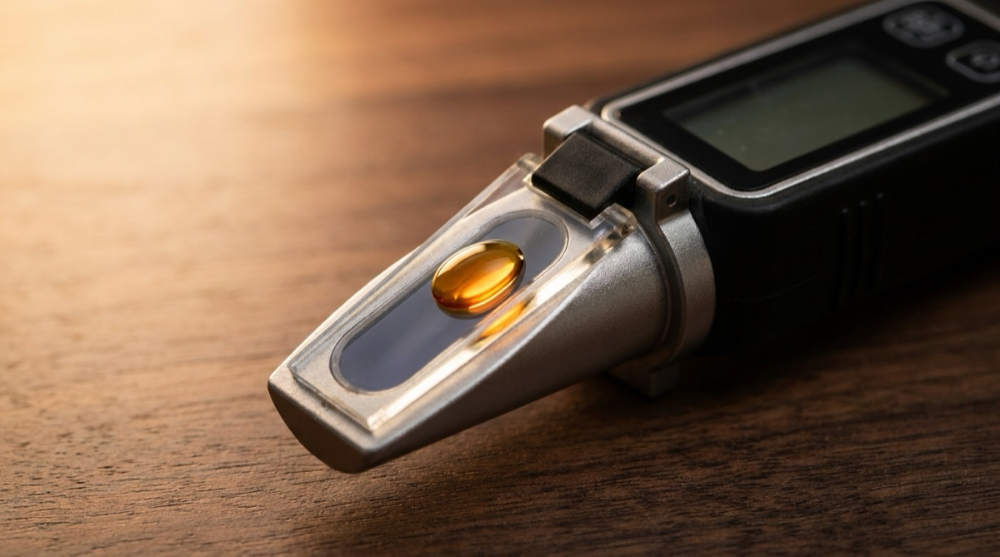

What is espresso extraction? Understanding TDS, yield, and ratio.

"Extraction" is one of those words that specialty-coffee people use casually, assuming everyone knows what it means. Most people don't. The word covers three distinct concepts — the process of brewing coffee, the percentage of the bean that ends up dissolved, and the strength of the resulting drink — and they often get mixed up in the same sentence.
This article is the foundation. By the end you'll understand extraction yield vs total dissolved solids vs brew ratio, why a 1:2 shot isn't "weaker" than a 1:1.5, and how these abstract numbers map to what you taste.
What extraction actually is
When hot water meets coffee grounds, it dissolves some of the compounds inside them. Sugars, acids, caffeine, melanoidins, oils, aromatics — around 30% of a coffee bean's mass is soluble. A coffee extraction is the process of getting those soluble compounds out of the solid bean and into your cup.
Not every soluble compound dissolves at the same rate. The rough order is:
- Acids and salts come out first. Bright, sour, sharp.
- Sugars and the "sweet" compounds come out in the middle.
- Bitter compounds — tannins, melanoidins, some roast-developed substances — come out last.
This is why a shot pulled too short tastes sour (only the first-to-dissolve acids are in the cup) and a shot pulled too long tastes bitter (you've extracted into the last-to-dissolve bitterness). Balance is the sweet middle where sugars, acids, and just enough bitterness are all present.
TDS vs extraction yield
Two numbers get used interchangeably and shouldn't:
TDS (Total Dissolved Solids)
TDS is the concentration of dissolved coffee in your cup, measured as a percentage by mass. A TDS of 10% means the liquid in the cup is 10% coffee solids and 90% water. Espresso typically runs 8–12% TDS. Filter coffee runs 1.2–1.5%. TDS is what "strength" usually means — it's how thick and intense the drink tastes.
Extraction yield (EY)
Extraction yield is the percentage of the dry coffee that ended up dissolved. If you started with 18 g of coffee and ended up with 36 g of espresso at 10% TDS, that's 3.6 g of dissolved solids from an 18 g starting mass — an extraction yield of 20%.
The practical difference: TDS measures how strong the drink is. Extraction yield measures how much of the bean was extracted. You can have a high TDS with low extraction (short shot, strong but under-developed) or a low TDS with high extraction (long shot, watery but over-extracted). They are separate dials.
Brew ratio explained
Brew ratio is the relationship between dry coffee weight and liquid yield, written as 1:X. A 1:2 ratio means for every 1 g of dry coffee you have 2 g of espresso. An 18 g in, 36 g out shot is a 1:2.
Ratios you'll hear about:
- 1:1 to 1:1.5 — ristretto. Very concentrated, short, can be syrupy. Traditional in much of Italy.
- 1:2 — the modern default. Widely agreed to be the starting point for specialty espresso at medium roast.
- 1:2.5 to 1:3 — longer shots. Common for light roasts, which are denser and harder to extract. Also suits espresso drinks with milk (a flat white or cappuccino).
- 1:4+ — lungo. Long, diluted, not strictly espresso anymore. Rare in specialty.
The key insight most beginners miss: a longer ratio is not weaker coffee. Longer ratios usually mean higher extraction yield — you've pulled more of the bean into the cup, but in more water. The drink is less concentrated (lower TDS) but the coffee is more developed (higher EY).
The math in plain English
A worked example. Say you pull:
- Dry coffee: 18.0 g
- Yield in the cup: 36.0 g (a 1:2 ratio)
- Measured TDS (with a refractometer): 10.0%
Dissolved solids in the cup = 36.0 g × 10.0% = 3.6 g.
Extraction yield = 3.6 g / 18.0 g = 20.0%.
Now pull the same coffee at 18.0 g in, 45.0 g out, and suppose you measure 8.5% TDS. Dissolved solids = 3.825 g. Extraction yield = 3.825 / 18.0 = 21.2%.
The second shot is weaker (lower TDS — 8.5% vs 10.0%) but more extracted (higher EY — 21.2% vs 20.0%). It will taste less concentrated and more "developed" — more chocolate, more sweetness, potentially a touch of bitterness if you've pushed past the ideal zone.
Target zones for espresso
The specialty coffee industry broadly agrees on these target bands:
| Metric | Range | Notes |
|---|---|---|
| TDS | 8–12% | Modern specialty espresso sits in this band. Traditional Italian ristretto can run 14%+. |
| Extraction yield | 18–22% | Below 18% usually tastes sour; above 22% usually tastes bitter. |
| Brew ratio | 1:1.5 – 1:3 | Depends on roast level and preference. |
| Time | 25–32 seconds | Diagnostic, not target. Correct time falls out of correct grind + dose + yield. |
These are reference zones, not rules. Some of the best espresso we've had breaks every one of them — ristrettos at 14% TDS, light-roast shots at 23% EY that taste incredible, weird experimental 1:4 shots pulled for their tea-like delicacy. The zones are what to aim for when you're learning; deviating intentionally is how you develop taste.

Tasting the numbers
Every number in this article is a diagnostic, not a goal. The goal is the cup.
You don't need a refractometer to brew good espresso. Most home baristas we know, including us, brew entirely by taste and by the numbers that don't require a refractometer (dose, yield, time). The numbers in this article are scaffolding — when you know what they mean, you can troubleshoot a bad shot faster because the taste maps onto the physics.
A quick cheat sheet:
- Sour / thin → under-extraction → grind finer or pull longer.
- Bitter / drying → over-extraction → grind coarser or pull shorter.
- Hollow / flat / watery → under-developed → usually means old beans, or grind too coarse with a short ratio. Try finer + a 1:2.2 ratio.
- Muddy / astringent → channelling → distribution problem, not a grind problem. Check your prep.
Learn by doing.
Extraction logs every variable for every shot — dose, yield, time, grind, rating — and surfaces the patterns you'd never catch by memory. Free trial, no card.
Download on the App StoreFrequently asked questions
The process of water dissolving compounds out of coffee grounds. It's also a measurable percentage — extraction yield — of how much of the dry coffee ended up in the cup.
TDS measures strength — the concentration of coffee in the liquid. Extraction yield measures development — how much of the bean you pulled into the cup. You can have strong but under-extracted coffee (short shots) and weak but over-extracted coffee (long shots).
No. It's an education tool and a diagnostic if you're troubleshooting, but most home baristas dial in by taste and by the accessible numbers (dose, yield, time). A refractometer costs $500+ and replaces tasting with measurement, which most people find less fun, not more.
Time is a weak signal. A 30-second shot can be under-extracted if the grind is too coarse or the dose is too low. Taste is the real diagnostic — if it tastes hollow, you need either more grind resistance or a different coffee.